Az305 - Summary 4
Azure SQL
Azure SQL Offerings
SQL Server on Azure VMs
- Provides SQL Server and OS-level access.
- Supports various SQL Server and OS versions.
- Best for migrations and applications requiring OS interaction.
Managed Instances
-
Single instance
- Gives SQL Server and OS access for robust needs.
- Supports various SQL and OS versions.
- Best for isolated SQL workloads needing dedicated resources.
-
Instance pool
- Enables pre-provisioning of resources for efficient migration.
- Hosts smaller, cost-effective instances.
- Suitable for batch migration of smaller databases.
Databases
-
Single database
- Offers hyperscale storage up to 100TB.
- Features demand-based serverless compute.
- Best for cloud applications needing a fully managed service.
-
Elastic pool
- Enables resource sharing among databases.
- Simplifies performance management with multiple databases.
- Best for managing and scaling databases with variable usage patterns.
Azure SQL Database
Azure SQL Database is a fully managed relational database service provided by Microsoft Azure.
It is a cloud-based database service that offers a high level of scalability, availability, and security.
Azure SQL Database is based on the latest version of Microsoft SQL Server, and it is designed to handle various workloads ranging from small web applications to large enterprise workloads.
Azure SQL Database supports popular relational database engines, such as SQL Server, MySQL, and PostgreSQL, and offers a variety of deployment options, including single database and elastic pool.
Azure SQL Database offers several benefits that make it a popular choice for businesses looking to migrate their on-premises databases to the cloud.
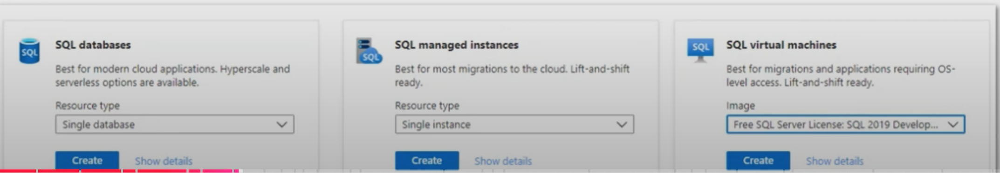
Some of the key benefits include:
Fully Managed Service: Azure handles administrative tasks like patching and backups, freeing businesses to focus on core tasks.
High Availability: Built-in automatic failover and disaster recovery capabilities ensure data access, even during outages.
Scalability: Azure SQL Database easily scales resources according to workload, optimizing costs.
Security: Advanced features like threat protection and data encryption ensure secure data storage.
Integration: Azure SQL Database integrates seamlessly with other Azure services, supporting the development of modern data-driven applications.
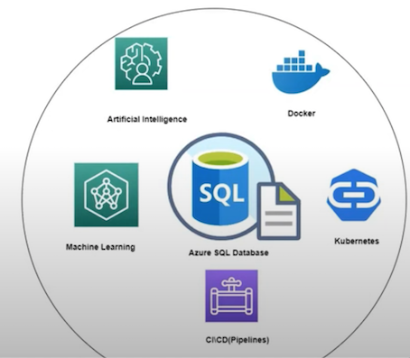
Azure SQL Database service tiers
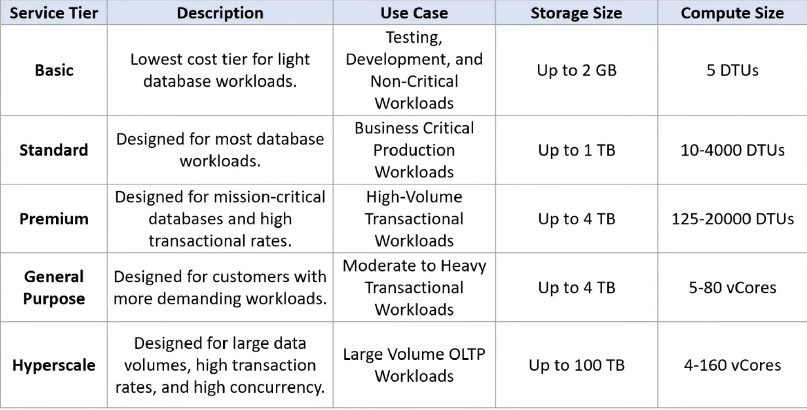
Azure SQL Database elastic pools
Azure SQL Database elastic pools are a simple, cost-effective solution for managing and scaling multiple databases that have varying and unpredictable usage demands.
The databases in an elastic pool are on a single server and share a set number of resources at a set price.
The concept of "elastic pools" refers to a shared pool of resources - such as CPU, memory, and storage - allocated to a group of databases. This shared set of resources can be automatically adjusted and distributed among the databases based on their varying demand.
Azure SQL Database Elastic Pools is ideal for businesses with many databases experiencing varying workloads.
Instead of allocating dedicated resources per database, an elastic pool shares resources across databases for efficient use and cost reduction.
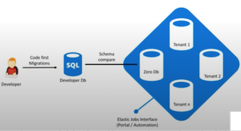
Azure SQL Database elastic pools
Benefits of Azure SQL Database Elastic Pools:
- Cost-Effective: Share resources across databases, pay only for what you use.
- Performance Management: Resources are auto-managed across a pool, no manual adjustment required.
- Flexibility and Scalability: Auto-scales to meet demand, handling traffic spikes smoothly.
- Simplified Administration: Easier management with shared resources across databases.
Use Cases for Azure SQL Database Elastic Pools:
- SaaS Providers: Manage varying customer database activity cost-effectively.
- Development and Test Environments: Efficient, less expensive process for regular database setup and teardown.
- Businesses with Multiple Apps: Optimize resource usage and cost by sharing resources among databases with varying activity.
Azure SQL Managed Instance
Azure SQL Managed Instance is a fully managed database service offered by Microsoft Azure, designed to provide an easy migration path for SQL Server workloads to Azure.
- It provides a managed instance of SQL Server in the cloud, allowing you to run your existing applications with minimal changes.
Azure SQL Managed Instance is built on top of the latest SQL Server engine and supports all its features including complex queries and user-defined functions.
- It offers various deployment options, including standalone, automatic failover configurations, and cross-region replication for disaster recovery.
Azure SQL Managed Instance is ideal for modernizing SQL Server workloads, consolidating multiple SQL Server instances, and building new cloud-native applications.
Some of the main benefits of Azure SQL Managed Instance include:
- Easy Migration: Provides a swift, simple migration path for SQL Server workloads to Azure with minimal application changes.
- Fully Managed: Microsoft handles maintenance, backups, and updates, allowing focus on applications.
- High Availability: Built-in capabilities for automatic failover and disaster recovery ensure constant application availability.
- Security: Offers features like data encryption and threat detection for data protection.
- Performance: Supports large databases, high transaction rates, and low-latency queries.
- Integration: Seamlessly integrates with other Azure services for easy cloud-native application deployment.
Azure SQL Managed Instance service tiers
Azure SQL Managed Instance has two service tiers:
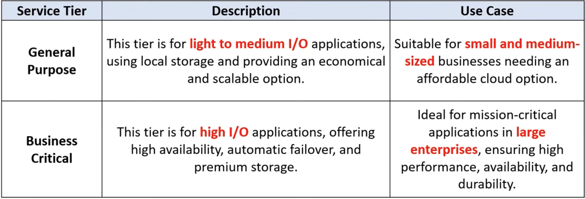
Database Scalability
Both Azure SQL Database and Azure SQL Managed Instance enable you to scale database resources with minimal downtime, adjusting quickly to workload or traffic changes.
To dynamically scale database resources, you can use the following options:
Horizontal scaling: This involves adding or removing replicas to adjust the capacity of your database. Both Azure SQL Database and Azure SQL Managed Instance support horizontal scaling.
Vertical scaling: This involves adjusting the resources allocated to your database, such as CPU or memory. Both Azure SQL Database and Azure SQL Managed Instance support vertical scaling.
Database Scalability
The exact process for scaling your database resources may vary depending on which service you are using, but in general, the steps are as follows:
- Determine the resource needs of your database, such as the required CPU and memory, and the expected workload or traffic.
- Decide on the scaling option that best meets your needs, whether that be horizontal or vertical scaling.
- Use the Azure portal, PowerShell, or the Azure CLI to configure the scaling settings for your database.
- Monitor the performance of your database to ensure that the scaling changes are providing the expected improvements.
The difference between Azure SQL Database and Azure SQL Managed Instance when it comes to dynamically scaling database resources:
- Azure SQL Database offers a wide range of service tiers, each with varying levels of performance and capabilities.
- These service tiers allow you to choose the level of resources that best meets your needs, and to easily scale up or down as needed.
Azure SQL Managed Instance offers two service tiers: General Purpose and Business Critical.
These service tiers are designed to meet different needs, with General Purpose offering a balance of price and performance, and Business Critical offering higher performance and availability for mission-critical workloads.
Dynamic data masking
Dynamic Data Masking (DDM) in Azure is a feature that helps prevent unauthorized access to sensitive data.
It is a security feature of Azure SQL Database, Azure Synapse Analytics (SQL DW), and SQL Server that automatically conceals sensitive data in the result set of a query
For example, if you have a credit card number stored as '1234-5678-9101-1121', a dynamic data masking rule might display this as 'XXXX-XXXX-XXXX-1121' in the query results, thereby hiding the majority of the credit card number.
Dynamic data masking is useful for scenarios where you want to provide a level of data security without needing to modify database operations. It's often used in scenarios like:
- Reducing the exposure of sensitive data in your database when users are running reports or analytics.
- Preventing accidental exposure of sensitive data, especially when data is being used for development or testing purposes.
XXX XXX X348
XXX XXX X692
XXX XXX X925
XXX XXX X099
Dynamic data masking
Key features:
- Real-Time Masking: Data is masked in real-time and does not affect the underlying data stored in the database. The actual data remains intact and is not physically changed.
- Customizable Masking Patterns: You can define different types of masks depending on the nature of the data. From partially hiding email addresses to fully masking credit card numbers, except the last four digits, the choices are vast and flexible.
- Role-Based Access Control: Unmasking permissions can be granted to users who need to access the actual data.
- Ease of Use: Dynamic Data Masking is simple to set up and doesn't require changes to the database or applications.
Common use cases for Dynamic Data Masking include protecting Personally Identifiable Information (PI), financial data, and other sensitive data types in non-production environments or in applications with user roles that require access to a database but not all of its sensitive data.
Azure Storage security and encryption
Azure Storage provides several security and encryption features to ensure the confidentiality, integrity, and availability of your data.
Here are some of the key features:
- Encryption at rest: Azure Storage automatically encrypts all data at rest using Azure Storage Service Encryption (SSE) or customer-managed keys using Azure Key Vault.
- Encryption in transit: All data transferred to and from Azure Storage is encrypted using SSL/TLS.
- Role-based access control (RBAC): Azure Storage provides RBAC, which enables you to grant permissions to users, groups, and applications at a fine-grained level.
- Access keys and shared access signatures (SAS): Azure Storage provides two types of authentication mechanisms for accessing storage accounts - access keys and shared access signatures (SAS).
- Access keys are account keys that allow full access to a storage account, while SAS provides granular access control to specific resources within a storage account.
Azure Storage security and encryption
Azure Private Link: Azure Private Link enables you to access Azure Storage resources over a private endpoint in your Virtual Network. This ensures that traffic between our Virtual Network and Azure Storage remains on the Microsoft Azure backbone network.
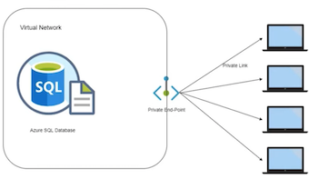
Azure Virtual Network Service Endpoints:
Azure Virtual Network Service Endpoints enable you to extend your Virtual Network to Azure Storage.
This ensures that traffic between your Virtual Network and Azure Storage remains on the Microsoft Azure backbone network.
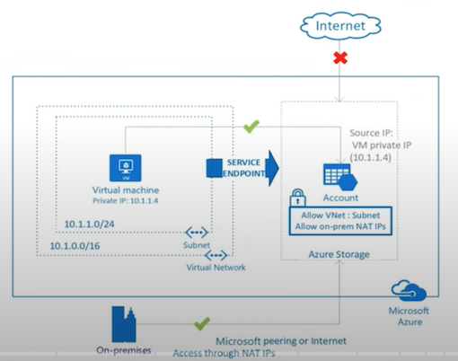
Azure Storage security and encryption
Azure Firewall: Azure Firewall is a managed, cloud-based network security service that protects your Azure Virtual Network resources. You can use Azure Firewall to secure traffic between your Virtual Network and Azure Storage.
Azure Monitor and Azure Security Center:
Azure Monitor and Azure Security Center provide monitoring and security features for Azure Storage.
Azure Monitor allows you to monitor storage account metrics and logs.
Azure Security Center provides security recommendations and threat detection for Azure Storage.
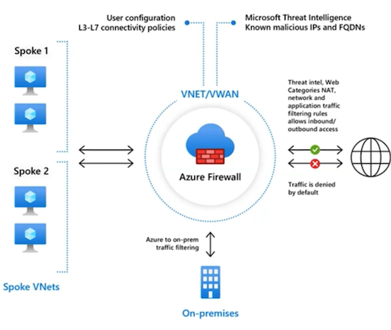
Azure Synapse Analytics
Azure Synapse Analytics is a data warehouse and unified analytics platform
Build ETL/ELT processes:
- in a code-free visual environment
- easily ingest data from more than 95 native connector
Deeply integrated Apache Spark
Use T-SQL queries on both your data warehouse and Spark engines
Supports multiple languages: T-SQL, Python, Scala, Spark SQL, and .NET
Integrated with Artificial Intelligence (AI) and Business Intelligence tools (BI)
- Azure Machine Learning
- Azure Cognitive Services
- Microsoft Power BI
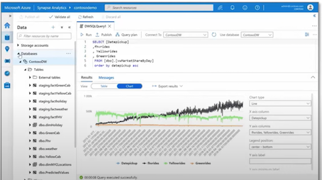
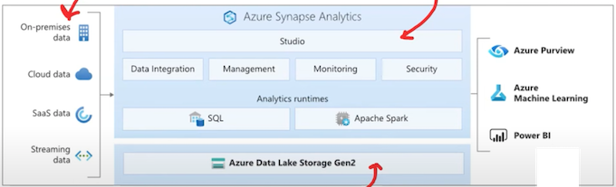
- On-premises data: You can ingest data from many data sources
- Studio: You can manage Azure Synapse Analytics via the Synapse Studio interface
- Azure Data Lake Storage Genz: The data is stored in Object Storage Via Data Lake Storage Gen 2
- Power BI: You can output the data to various Azure Services
Synapse SQL
Synapse SQL is a distributed version of T-SQL designed for data warehouse workloads
- Extends T-SQL to address streaming and machine learning scenario
- Use built-in streaming capabilities to land data from cloud data sources into SQL tables
- Integrate Al with SQL by using ML models to score data using the T-SQL PREDICT function
-
Offers both serverless and dedicated resource models
-
For unpredictable workloads (unplanned or burst)
use the always-available, serverless SQL endpoint.
- For predictable workloads
create dedicated SQL pools to reserve processing power for data stored in SQL tables
Dedicated SQL Pool
Dedicated SQL pool is a query service over the data in your data warehouse
The unit of scale is an abstraction of compute power that is known as a data warehouse unit (DWU).
Once your dedicated SQL pool is created, you can import big data with simple PolyBase T-SQL queries, and then use the power of the distributed query engine to run high-performance analytics
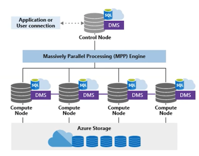
Serverless SQL Pool
Serverless SQL pool is a query service over the data in your data lake
Scaling done automatically to accommodate query resource requirements.
Whether you're adding nodes, removing them, or managing failovers, the Serverless SQL Pool is resilient.
It constantly adapts to ensure every query receives the resources it needs, guaranteeing successful execution.
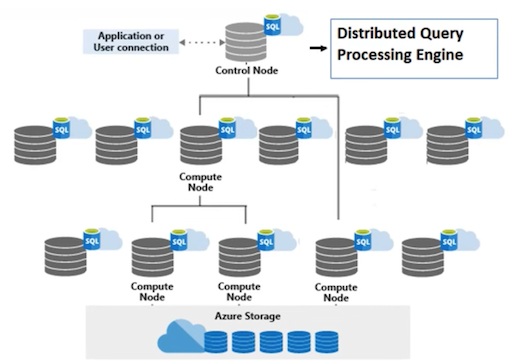
Apache Spark for Synapse
Azure Synapse can deeply and seamlessly integrate with Apache Spark, which is the most popular open-source big data engine used for
- data preparation,
- data engineering,
- ET,
- and machine learning.
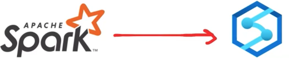
- ML models with SparkML algorithms and AzureML integration for Apache Spark 3.1 with built-in support for Linux Foundation Delta Lake.
- Simplified resource model that frees you from having to worry about managing clusters.
- Fast Spark start-up and aggressive autoscaling.
- Built-in support for .NET for Spark allowing you to reuse your C# expertise and existing .NET code within a Spark application.
Apache Spark with Data Lake
Azure Synapse removes the traditional technology barriers between using SQL and Spark together. You can seamlessly mix, and match based on your needs and expertise.
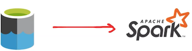
- Tables defined on files in the data lake are seamlessly consumed by either Spark or Hive.
- SQL and Spark can directly explore and analyze Parquet, CSV, TSV, and JSON files stored in the data lake.
- Fast, scalable data loading between SQL and Spark databases
Azure Synapse Link for Azure Cosmos DB
Azure Synapse Link is a feature in Azure Synapse Analytics that provides seamless integration and real-time analytics capabilities between Azure Synapse Analytics and operational data stored in Azure Cosmos DB.
Azure Synapse Link for Azure Cosmos DB
Azure Synapse Link is a feature in Azure Synapse Analytics that provides seamless integration and real-time analytics capabilities between Azure Synapse Analytics and operational data stored in Azure Cosmos DB.
It creates a tight integration between Azure Cosmos B and Azure Synapse Analytics, allowing users to explore and analyze their data with no extraction, transformation, and loading (ETL) process required, no data duplication, and no impact on the performance of transactional workloads.
Azure Synapse Link forms a connection between Azure Cosmos DB's transactional database and Azure Svnapse Analvtics' analytical capabilities.
It accomplishes this by creating a real-time updated. columnar-based analytical store within Cosmos DB.
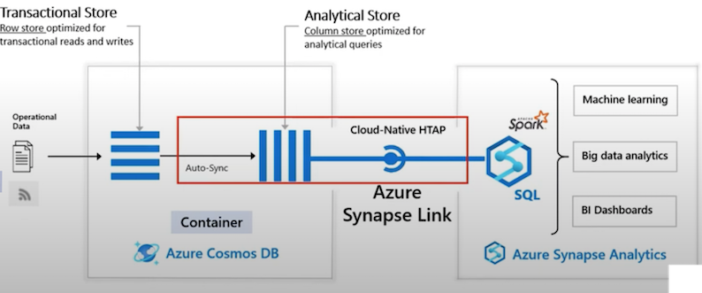
Benefits of Azure Synapse Link for Azure Cosmos DB
- Real-time Analytics: Azure Synapse Link enables real-time analytics by allowing direct querying of live operational data in Azure Cosmos DB, without impacting its performance.
- Operational and Analytical Data Cohesion: It eliminates the need for complex ETL (Extract, Transform, Load) processes. This simplifies the data architecture as it provides immediate and seamless access to analyze operational data.
- Cost Efficiency: Azure Synapse Link reduces costs by avoiding the need for additional storage and compute resources that are typically required for ETL processes.
- Increased Productivity: By removing the need for manual data extraction or synchronization processes, Azure Synapse Link saves time and increases productivity for data scientists and developers.
- Improved Data Freshness: With Azure Synapse Link, the most up-to-date data from Azure Cosmos DB can be accessed for analytics and reporting in real-time. This ensures data freshness and accuracy.
When to use Azure Synapse Link for Azure Cosmos DB?
You should consider using Azure Synapse Link for Azure Cosmos DB when:
- You are an Azure Cosmos DB user wanting to conduct analytics, Business Intelligence (BI), and machine learning on your operational data.
- You are currently running analytics or Bl on your Azure Cosmos DB operational data using separate connectors, or
- You are executing EL processes to transfer operational data into a distinct analytics system.
In such cases, Azure Synapse Link offers a seamless analytics experience without impacting the performance of your transactional store.
However, it's not ideal if you require traditional data warehouse capabilities like high concurrency, workload management, and persisting aggregates across multiple data sources.
Introduction to Azure Data Factory
Azure Data Factory is a managed service for ETL (Extract, Transform, Load), ELT (Extract, Load, Transform) and data integration.
Create data-driven workflows for orchestrating data movement and transforming data at scale
- Create Pipelines to schedule data-driven workflows
- Build complex ET processes that transform data visually with data flows
- Use compute services such as Azure HDInsight Hadoop, Azure Databricks, and Azure SQL Database
- Publish your transformed data to data stores such as Azure Synapse Analytics
- Raw data can be organized into meaningful data stores and data lakes
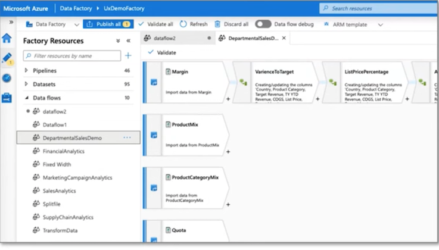
Azure Data Factory - Core Components
Pipelines
A logical grouping of activities that performs a unit of work
Activities
A processing step in a pipeline
Datasets
Data structures within the data store
Linked services
Define the connection information for data sources to connect to Data Factorv
Data Flows Logic to determine how data moves through a pipeline or is transformed
Integration Runtimes (RI)
Compute infrastructure used by Azure Data Factory
Control flow
Orchestration of pipeline activities that includes chaining activities in a sequence, branching
Azure Data Factory - Data Orchestration Process
-
Data Ingestion: ADF ingests data from varied sources, like on-premises SQL Server databases or external data. Data is pulled in using connectors in either batch or real-time modes.
-
Data Storage and Transformation: Post ingestion, data is stored for processing in Azure Blob Storage or Azure Synapse Analytics for more structured data. ADF pipelines transform this data by cleaning and enriching it.
-
Analysis: The processed data is loaded into Azure Analysis Services for analysis, providing a unified view of your business data.
-
Visualization: The analyzed data is leveraged by tools like Power BI to generate insightful visualizations and reports.
-
Security and Authentication: Azure AD is used throughout this process for user authentication and authorization, securing your resources and data.
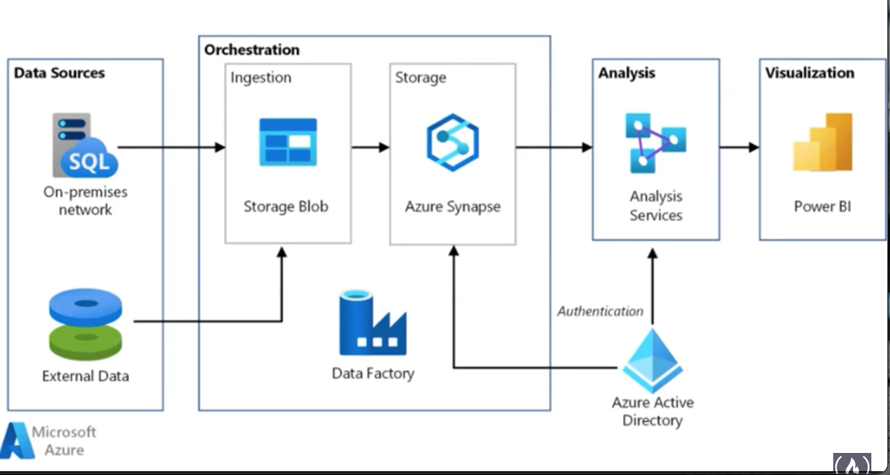
Microsoft SQL Server Integration Services
Microsoft SQL Server Integration Services (SSIS) is a platform for building enterprise-level data integration and data transformation solutions
You can perform the following tasks with SSIS
- Copy files or download files
- Load data into data warehouses
- Cleanse data for better accuracy
- Dive into mining data
- Manage SQL Server objects and data
- SIS can be used to automate SQL Server databases
- SIS can be used as an integration runtime in Azure Data Factory
SSIS has...
- Built-in tasks and transformations
- Graphical tools for building packages
- Integration Services Catalog database
- where you store, run, and manage packages
Perform ET with variety of sources:
- XML
- Flat files
- Relational data sources
Use Graphical Integration Services tools to integrate and transform data without having to write code
SIS Designer is a graphical tool that you can use to create and maintain Integration Services packages.
Microsoft SQL Server Integration Services
SSIS allows vou to drag out data transformations
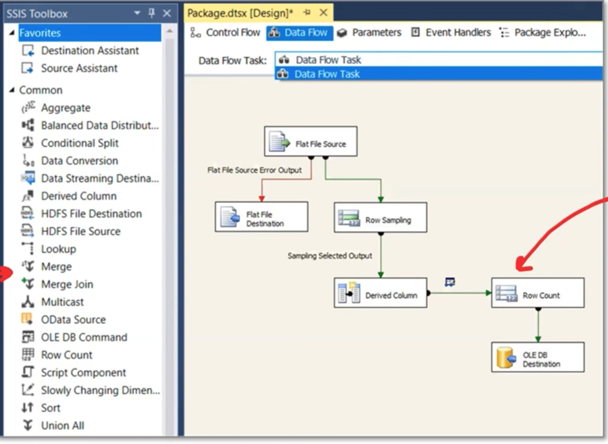
Design different kinds of control or data flows
Azure Databricks
Azure Databricks is an Apache Spark-based analytics platform optimized for the Microsoft Azure cloud services platform
It is designed to simplify the process of building big data and artificial intelligence solutions by providing a unified analytics platform that accelerates the preparation of data for analytics and machine learning.
Azure Databricks - Pricing tiers
Azure Databricks offers two pricing tiers: Premium and Standard.
1. Premium SKU: The Premium tier offers a full set of advanced Databricks features such as role-based access control, integration with Azure Active Directory for identity management, and Databricks Delta Engine which is a high-performance engine for large-scale data lakes.
It is the most appropriate for big data analytics workloads and organizations requiring advanced security and team-based workflows.
2. Standard SKU: The Standard tier offers a subset of the Databricks platform features and is more cost-effective for smaller workloads or development/test environments.
It includes the basic Databricks runtime and the collaborative workspace but does not include role-based access control or Azure AD integration.
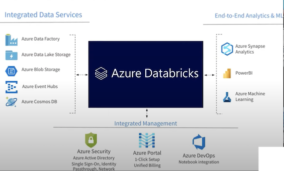
Azure Databricks
Key Features:
- Collaborative Environment: It provides a shared workspace for collaboration among data professionals. It facilitates dashboard creation and project sharing across various languages.
- Azure Integration: As a native service, it integrates smoothly with Azure services like Data Factory, Synapse Analytics, Machine Learning, and Power BI, simplifying analytics pipeline creation.
- Apache Spark Integration: It incorporates an optimized runtime for superior performance, offering a serverless Apache Spark experience with auto-configurability and integrated Azure security.
- Auto-Scaling and Performance: It offers auto-scaling and speed optimization for faster processing of big data workloads, scaling to thousands of nodes and handling diverse workloads.
- Robust Security: It delivers enterprise-grade security with data encryption, Active Directory integration, role-based access control, private network connectivity, and industry-standard compliance.
Use Cases:
- Big Data Analytics: Azure Databricks can process large volumes of data in parallel, making it suitable for big data processing and analytics.
- Machine Learning: It provides a platform for preparing data and developing, training, and deploying machine learning models.
- Real-time Analytics: Azure Databricks supports streaming analytics, allowing for real-time insights from data.
- ET Processes: Azure Databricks can be used for building robust ETL pipelines.
- Data Exploration and Visualization: The collaborative workspace in Azure Databricks allows for data exploration and visualization, enabling data scientists and analysts to derive insights from data.
Azure Databricks focuses on analytics, big data, and machine learning, while Azure Data Factory primarily handles data integration and pipeline orchestration in the cloud.
Introduction to Data Lakes
A data lake is a centralized, scalable data repository that stores raw, unstructured and semi-structured data
A Data Lake is intended to store vast amounts of data
Data lakes generally use object (blobs) or files as its storage medium.
Introduction to Azure Data Lake
Azure Data Lake is a scalable and secure data lake that allows you to store and analyze large amounts of data. It is composed of two main components: Azure Data Lake Storage and Azure Data Lake Analytics.
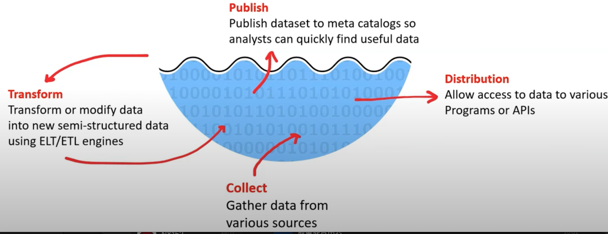
-
Azure Data Lake Storage: This is a massively scalable and secure data lake that allows you to store all types of data. There are two generations of Azure Data Lake Storage:
-
Azure Data Lake Storage Gen1: It provides a single repository where you can capture data of any size, type, and speed without forcing changes to your application as the data scales.
- Azure Data Lake Storage Gen2: This is a set of capabilities dedicated to big data analytics, built on Azure Blob storage. It combines the scalability and cost benefits of object storage with the reliability and performance of the big data file system capabilities.
2. Azure Data Lake Analytics: This is an on-demand analytics job service that simplifies big data.
Instead of deploying, configuring, and tuning hardware, you write queries to transform your data and extract valuable insights.
It includes U-SQL, a language that unifies the benefits of SQL with the expressive power of your own code.
It also allows you to dynamically scale the resources you need for your jobs, making it cost-effective.
Azure Data Lake Storage Gen1 (deprecated)
The first version of Data Lake Storage and will be retired in 2024. New users should use Gen2
Azure Data Lake Storage Gen2
Data Lake Storage is Azure Blog storage which is has been extended to support big data analytics workloads
- Designed to handle petabytes of data and hundreds of gigabits of throughput
- In order to efficiently access data, Data Lake Storage adds a hierarchical namespace to Azure Blob Storage
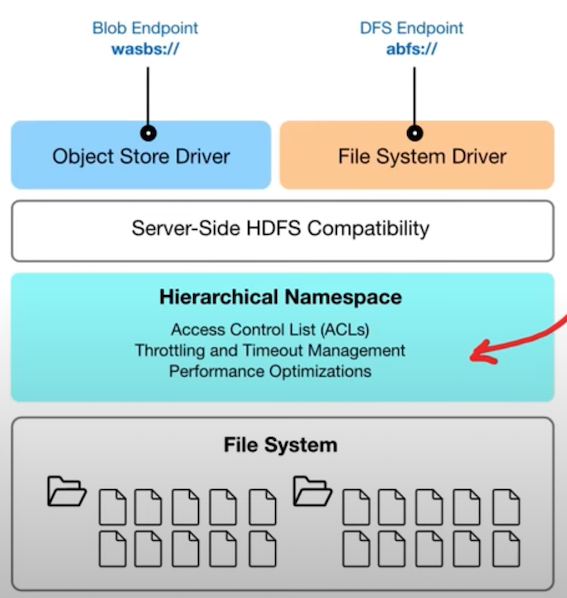
Azure Data Lake Storage Gen2
Azure Data Lake Storage Gen2 plays a vital role in Azure Data Lake by providing a secure, scalable platform to store large data volumes. It is tailored to support high-performance analytics and machine learning operations.
Here are some of its core features:
- Hierarchical Namespace: Enables organizing and managing data in a hierarchical file and folder structure similar to traditional file systems, simplifying data organization and transformations.
- Scalability: Designed to handle enormous amounts of data, from petabytes to exabytes, with high throughput and low latency. It can also manage high volumes of small writes, common in big data scenarios.
- Security: Incorporates Azure Active Directory for identity and access management, role-based access control, firewall rules, and virtual network service endpoints, along with encryption at rest and in transit. It also supports Azure Private Link, ensuring data travels over a private network.
- Cost-Effectiveness: Offers low-cost storage, with lifecycle management policies that automatically move data to cheaper storage tiers or delete it after a specified period, lowering costs.
- Performance: Provides the high-performance computing needed for big data analytics and allows choosing the best performance characteristics for specific workloads through its performance tiers.
Azure Data Lake Analytics
Azure Data Lake Analytics is an on-demand analytics job service that simplifies big data
Instead of deploying, configuring, and tuning hardware...
You write queries (via U-SQL) to transform your data and extract valuable insights.
Exporting approximately 2.8 billion rows of TPC-DS store sales data (~500 GB) into a CV file took less than 7 minutes
Importing the full 1 TB set of source data into Azure Analysis Services by using the Azure Data Lake connector took less than 6 hour
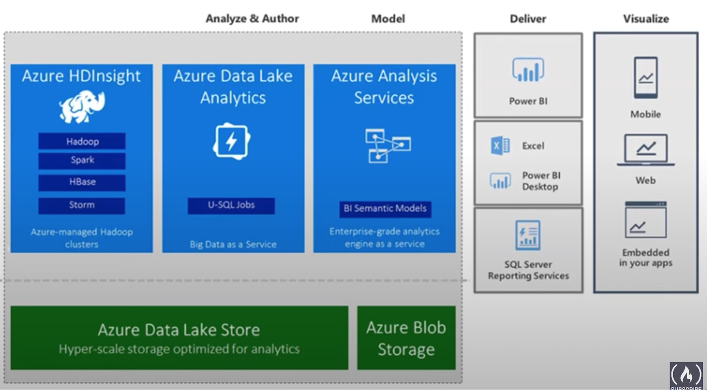
Azure Data Lake Analytics - U-SQL
U-SQL is a structured query language included within Data Lake Analytics to perform queries on your data lake.
U-SQL can query and combine data from a variety of data sources, including:
- Azure Data Lake Storage
- Azure Blob Storage
- Azure SQL DB
- Azure SQL Data Warehouse.
- SQL Server instances running in Azure VMs
You can install Azure Data Lake Tools for Visual Studio to perform U-SQL jobs on your Azure Data Lake
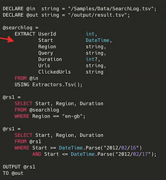